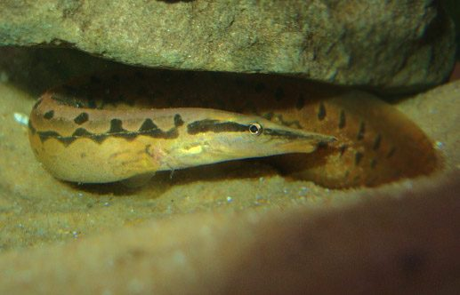

बामZig-zag Spiny Eel
Mastacembelus armatus · Mastacembelidae · FSH-0014

- Scientific name
- Mastacembelus armatus (Lacepède, 1800)
- Family
- Mastacembelidae
- Hindi
- बाम
- Status here
- native
- IUCN
- LC
When to look कब देखें
Present all year.
बाम / Zig-zag Spiny Eel
Mastacembelus armatus (Lacepède, 1800) — Mastacembelidae
बाम (ज़िग-ज़ैग स्पाइनी ईल) — पूर्वी उत्तर प्रदेश की नदियों, झीलों और बड़े तालाबों की तलहटी में पाई जाने वाली एक अत्यंत विशिष्ट, सांप जैसी दिखने वाली मीठे पानी की निवासी मछली है। यह वास्तव में एक ईल (true eel) नहीं है, बल्कि यह परसिफ़ॉर्म जैसी मछली है जिसके पास छाती के पास छोटे कांटे और पीठ पर 30 से अधिक स्वतंत्र छोटे कांटे (dorsal spines) होते हैं। इसका शरीर लंबा, बेलनाकार और चिकना होता है, जिस पर गहरे भूरे रंग के ज़िग-ज़ैग पैटर्न (zig-zag patterns) बने होते हैं। इसकी सबसे बड़ी पहचान इसकी लंबी, नुकीली थूथन (pointed snout) है, जिसके सिरे पर एक छोटी लचीली सूंड (fleshy proboscis) होती है। यह मुख्य रूप से रात में सक्रिय होती है और दिन के समय पत्थरों या रेत के नीचे छिपी रहती है।
Quick Identification त्वरित पहचान
| Feature | Description |
|---|---|
| Size | Large fish (typically 40–75 cm total length); weight 250–1200 g |
| Body shape | Elongated, snake-like body, laterally compressed posteriorly |
| Snout | Pointed snout ending in a small, fleshy, mobile proboscis |
| Spines | A row of 32–40 short, sharp, independent dorsal spines along the back |
| Colouration | Rich dark brown dorsally; distinct zig-zag or wavy dark bands along the flanks |
| Fins | Dorsal and anal fins are confluent (joined) with the caudal (tail) fin |
Field tip: Look near the bottom of clear streams or in catches from deep ponds. The snake-like body with dark zig-zag patterns and a pointed snout with a mobile tip distinguishes it. Unlike snakes, it has gills, pectoral fins, and a continuous fin around its tail.
Morphology आकारिकी
Biometrics (typical measurements for adult specimens in Gangetic river basins):
| Measurement | Range |
|---|---|
| Standard length (SL) | 350–700 mm |
| Total length (TL) | 400–750 mm |
| Weight | 250–1200 g |
Body structure: The body is highly elongated and eel-shaped, sub-cylindrical anteriorly and compressed laterally towards the tail. The head is long and pointed. The snout is extended into a mobile, trilobed fleshy appendage (proboscis). The mouth is inferior. The back bears a series of 32 to 40 short, sharp, independent dorsal spines. The dorsal fin (with 67–85 soft rays) and the anal fin (with 60–80 soft rays) are confluent with the rounded caudal fin. Scales are very small and cycloid.
Color details: The ground color is dark brown or greenish-brown dorsally, fading to pale yellow or light brown on the belly. The sides are marked with characteristic dark brown or black zig-zag or wavy bands, which occasionally form reticulated patches. A series of dark spots are present along the base of the dorsal and anal fins.
Behaviour & Ecology व्यवहार और पारिस्थितिकी
Nocturnal benthic burrower.
- Substrate hiding: Spend the day buried in sand, gravel, or hidden under submerged logs and stones, with only the snout protruding to breathe. They emerge at dusk to forage.
- Creeping movement: Move slowly along the bottom using a combination of lateral body undulations and fine adjustments of the pectoral fins.
- Summer survival: During the dry season, they burrow deep into the wet mud of drying ponds and remain in moist chambers until the water returns.
Ecological Role पारिस्थितिक भूमिका
Benthic carnivore.
- Benthic predator: Keep the populations of bottom-dwelling invertebrates and small fish in check, hunting primarily by smell and touch using their sensitive proboscis.
- Scavenger: Consume dead fish and organic waste along the riverbeds, maintaining clean substrates.
Life Cycle / Phenology जीवन चक्र
- Breeding season: June to August, coinciding with the peak monsoon floods.
- Breeding habitat: Spawns in clear, flowing water streams where rocky or gravelly substrates are available.
- Egg laying: The female lays small, green-coloured, slightly sticky eggs that attach to submerged rocks or plant roots.
- Incubation: Eggs hatch in 36–48 hours. The larvae are planktonic initially, developing their elongated body shape and proboscis as they settle to the bottom.
Host Plants or Prey आहार
Primary food items:
- Invertebrates: Earthworms, insect larvae (chironomids), and freshwater crabs (such as [CRU-0003 Jacquemont's Field Crab] juveniles).
- Fish: Small bottom-dwelling fishes like loaches and young gobies.
Predators / Natural Enemies शत्रु
- Birds: Large diving waterbirds like cormorants and storks.
- Fish: Large predatory fish such as the Great Snakehead [FSH-0009 Great Snakehead] prey on young spiny eels.
- Mammals: Otters hunting along riverbanks.
Agricultural / Human Relevance कृषि प्रासंगिकता
High fisheries value and snake confusion.
- Traditional food: Highly prized as a delicious table fish due to its rich fat content and firm, boneless meat. It commands a premium price in local markets in Basti.
- Snake confusion: Often causes panic among villagers and children when caught in shallow canals, as its body shape and movement closely resemble water snakes.
- Outreach point: It is completely harmless, non-venomous, and cannot bite humans. It is an important indicator of clean, oxygenated bottom waters.
Expected Locally स्थानीय रूप से अपेक्षित
Not a field record. Written from published accounts for eastern Uttar Pradesh. No confirmed local sighting yet — if you have seen it, that is what the atlas needs.
अभी तक स्थानीय पुष्टि नहीं। यह विवरण प्रकाशित स्रोतों से है, किसी अवलोकन से नहीं।
Commonly found in the Kuwano and Ami rivers of Basti district, and occasionally in larger village ponds with sandy margins. Anglers catch them during the rainy season using earthworms as bait on bottom-sinking lines. They are also collected by hand from drying riverbeds in early summer.
Distribution वितरण
Global range: Widespread across South and Southeast Asia, including Pakistan, India, Nepal, Bangladesh, Sri Lanka, Myanmar, Thailand, and Malaysia.
In India: Found throughout the freshwaters of the plains, especially in river basins with stony or sandy bottoms.
In Uttar Pradesh: Common in all major rivers (Ganges, Yamuna, Ghaghra, Sarayu) and their tributaries.
In Basti district / eastern UP: Found in the main channel and tributaries of the Ghaghra and Kuwano rivers.
Research Questions शोध प्रश्न
Anyone can investigate these | कोई भी इन प्रश्नों की जाँच कर सकता है
- How do spiny eels locate hidden earthworms in complete darkness compared to light conditions? — Test foraging efficiency in sand-filled tanks with varying light.
- What is the preference of Mastacembelus armatus for sandy vs. muddy substrates for burrowing? — Conduct choice chamber experiments.
- What is the average density of spiny eels in rocky river zones compared to silt-rich village canals in Basti? — Conduct drag-net surveys at different locations.
- How do spiny eels tolerate low oxygen levels when trapped in drying mud pools? / सूखे कीचड़ के गड्ढों में फंस जाने पर बाम मछली कम ऑक्सीजन के स्तर को कैसे सहन करती है? — Monitor breathing behavior in low-oxygen water.
- Does the use of fine-meshed mosquito nets for fishing lead to overexploitation of juvenile spiny eels? / महीन जाल वाली मच्छरदानियों से मछली पकड़ने पर क्या बाम मछली के बच्चों पर कोई नकारात्मक प्रभाव पड़ता है? — Survey catches in local channels.
Similar Species मिलती-जुलती प्रजातियाँ
| Species | Key Difference | हिंदी |
|---|---|---|
| Macrognathus pancalus (Barred Spiny Eel) | Much smaller (15–20 cm); body has light spots and vertical bars; dorsal fin is separate from the tail fin | गैंची — छोटी, पूँछ और पीठ के पंख अलग |
| [FSH-0013 Freshwater Garfish] (Xenentodon cancila) | Needle-like beak jaws; surface swimmer; silver body; lacks dorsal spines and proboscis | सुइया — सुई जैसा जबड़ा, पानी की सतह पर तैरना |
| [FSH-0009 Great Snakehead] (Channa marulius) | Thick cylindrical body; snake-like head without proboscis; has a tail ocellus | सौर — भारी शरीर, गोल पूँछ पर नारंगी आँख जैसा धब्बा |
Field rule: Elongated snake-like body, pointed snout ending in a fleshy mobile proboscis, confluent dorsal/anal/caudal fins, and dark zig-zag patterns identify the Zig-zag Spiny Eel.
Taxonomy & Classification वर्गीकरण
Original description. Bernard Germain de Lacepède described the Zig-zag Spiny Eel as Macrognathus armatus in 1800 in his multi-volume work Histoire Naturelle des Poissons (Vol. 2, p. 283, 286). The type locality was India. The genus name Mastacembelus is derived from the Greek mastax (mouth/jaw) and emballein (to throw in/insert), referring to the projecting lower jaw. The specific name armatus is Latin for "armed", referring to the row of sharp dorsal spines.
Subspecies. Monotypic — no subspecies are currently recognised.
Family and order placement. Placed in the order Synbranchiformes, family Mastacembelidae.
Phylogenetic notes. Mastacembelus armatus represents an ancient branch of spiny eels specialized for benthic hunting, showing highly modified vertebral columns and cranial bones.
IUCN status rationale. Listed as Least Concern (LC) due to its extensive geographic range, high population density, and tolerance of varied freshwater habitats, though threatened locally by river pollution and habitat modification.
Photo Gallery फोटो गैलरी
References संदर्भ
- Lacepède, B. G. (1800). Histoire Naturelle des Poissons. Tome 2. Paris, p. 283, 286. [original description]
- Talwar, P. K. & Jhingran, A. G. (1991). Inland Fishes of India and Adjacent Countries. Vol. 2. Oxford & IBH Publishing Co., New Delhi.
- Jayaram, K. C. (2010). The Freshwater Fishes of the Indian Region. 2nd ed. Narendra Publishing House, Delhi.
- Sufi, S. M. K. (1956). Revision of the Oriental fishes of the family Mastacembelidae. Bulletin of the Raffles Museum, 27, 93-146.
- IUCN SSC Freshwater Fish Specialist Group (2024). Mastacembelus armatus. IUCN Red List of Threatened Species. Ver. 2024.
- GBIF Occurrence Data — Mastacembelus armatus, Uttar Pradesh (2010–2025).
Source file: species/fauna/fish/spiny_eel.md